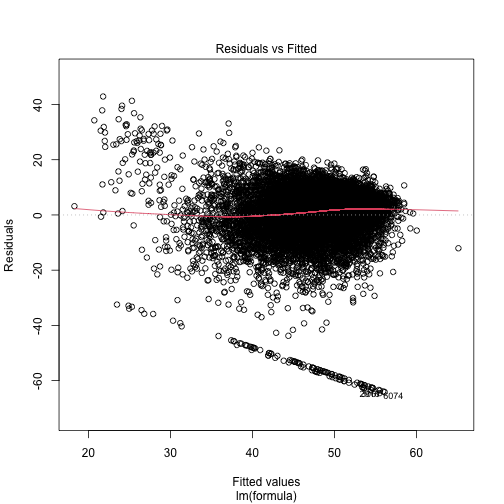
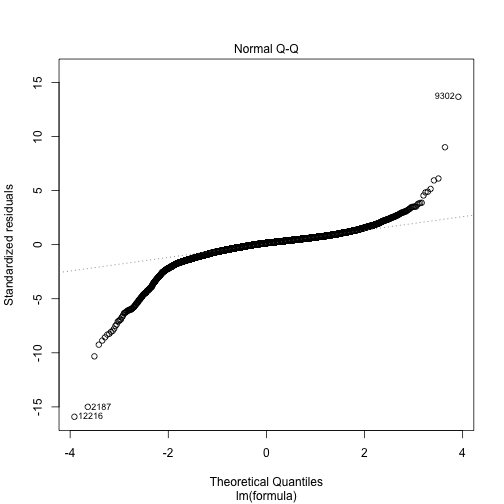
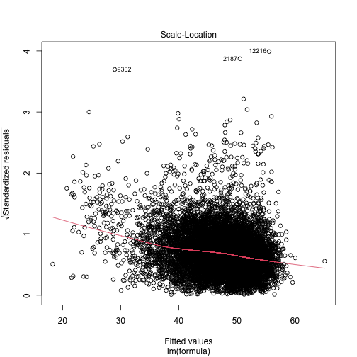
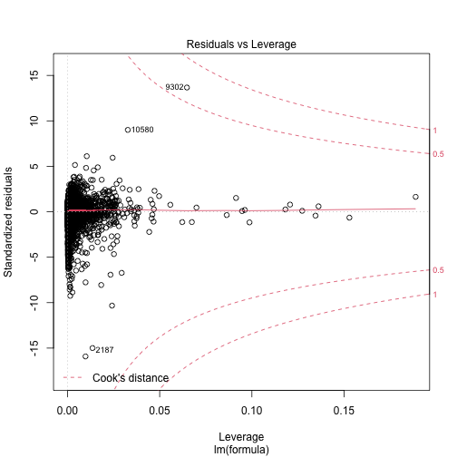
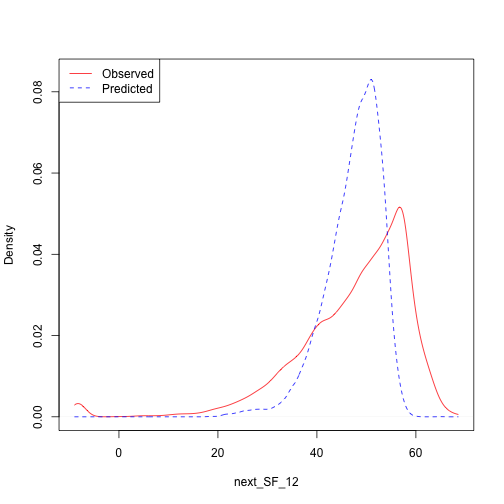

Mental Well-Being
Mental Well-Being
Introductory fluff. Why do we need this module? test reference (Nelson 1987).
Methods
What methods are used? Justification due to output data type. explanation of model output.
continuous_density("data/transitions/SF_12/OLS/SF_12_2018_2019.rds", "next_SF_12")
plot of chunk SF12_Density
Data
What variables are included? Why is this output chosen. What explanatory variables are used and why are they chosen
Results
What are the results. Coefficients tables. diagnostic plots. measures of goodness of fit.
##
## Call:
## lm(formula = formula, data = data, weights = weight)
##
## Weighted Residuals:
## Min 1Q Median 3Q Max
## -15.9088 -0.1695 0.0000 0.3831 13.2770
##
## Coefficients:
## Estimate Std. Error t value Pr(>|t|)
## (Intercept) 1.442e+01 7.570e-01 19.043 < 2e-16 ***
## age 1.149e-01 6.038e-03 19.023 < 2e-16 ***
## factor(sex)Male 1.267e+00 1.984e-01 6.386 1.78e-10 ***
## relevel(factor(ethnicity), ref = "WBI")BAN -1.133e+00 1.404e+00 -0.807 0.4194
## relevel(factor(ethnicity), ref = "WBI")BLA 1.045e+00 8.563e-01 1.220 0.2223
## relevel(factor(ethnicity), ref = "WBI")BLC 2.142e+00 1.246e+00 1.719 0.0856 .
## relevel(factor(ethnicity), ref = "WBI")CHI 1.284e+00 1.510e+00 0.850 0.3952
## relevel(factor(ethnicity), ref = "WBI")IND 3.070e+00 6.371e-01 4.819 1.46e-06 ***
## relevel(factor(ethnicity), ref = "WBI")MIX -6.570e-01 8.082e-01 -0.813 0.4162
## relevel(factor(ethnicity), ref = "WBI")OAS 1.197e+00 9.502e-01 1.259 0.2080
## relevel(factor(ethnicity), ref = "WBI")OBL 7.875e+00 4.497e+00 1.751 0.0800 .
## relevel(factor(ethnicity), ref = "WBI")OTH 1.429e+00 1.622e+00 0.881 0.3783
## relevel(factor(ethnicity), ref = "WBI")PAK -7.195e-01 8.948e-01 -0.804 0.4214
## relevel(factor(ethnicity), ref = "WBI")WHO 2.395e-01 4.334e-01 0.553 0.5806
## hh_income 2.941e-05 5.255e-05 0.560 0.5758
## factor(housing_quality)2 -6.988e-02 2.104e-01 -0.332 0.7398
## factor(housing_quality)3 -8.717e-01 3.948e-01 -2.208 0.0273 *
## phealth 2.357e+00 1.550e-01 15.209 < 2e-16 ***
## ncigs -3.404e-02 2.502e-02 -1.360 0.1738
## SF_12 3.798e-01 8.988e-03 42.261 < 2e-16 ***
## ---
## Signif. codes: 0 '***' 0.001 '**' 0.01 '*' 0.05 '.' 0.1 ' ' 1
##
## Residual standard error: 1.004 on 10969 degrees of freedom
## (126 observations deleted due to missingness)
## Multiple R-squared: 0.2359, Adjusted R-squared: 0.2346
## F-statistic: 178.3 on 19 and 10969 DF, p-value: < 2.2e-16

References
Nelson, Edward. 1987. Radically Elementary Probability Theory. Princeton University Press.